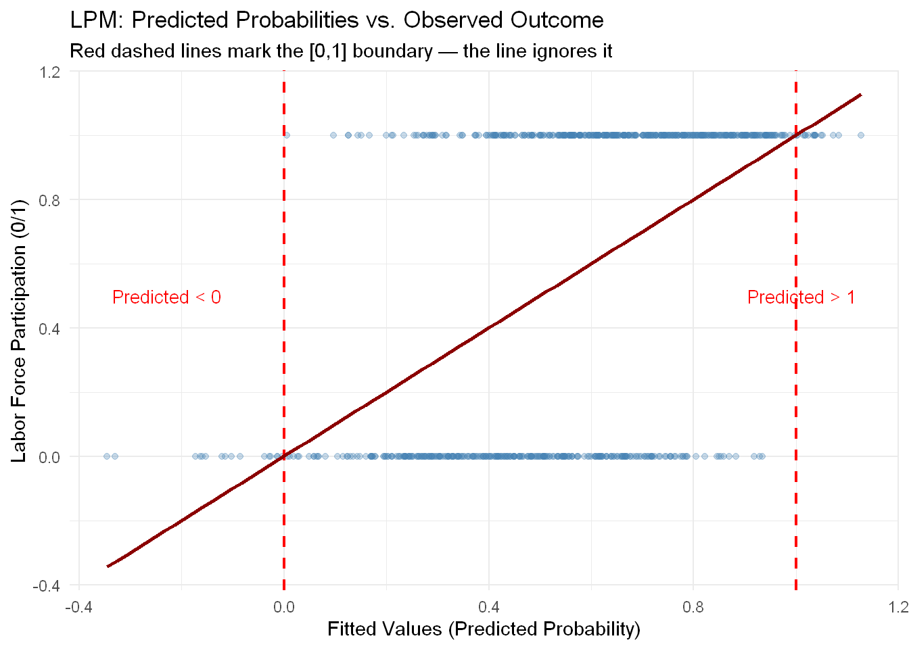
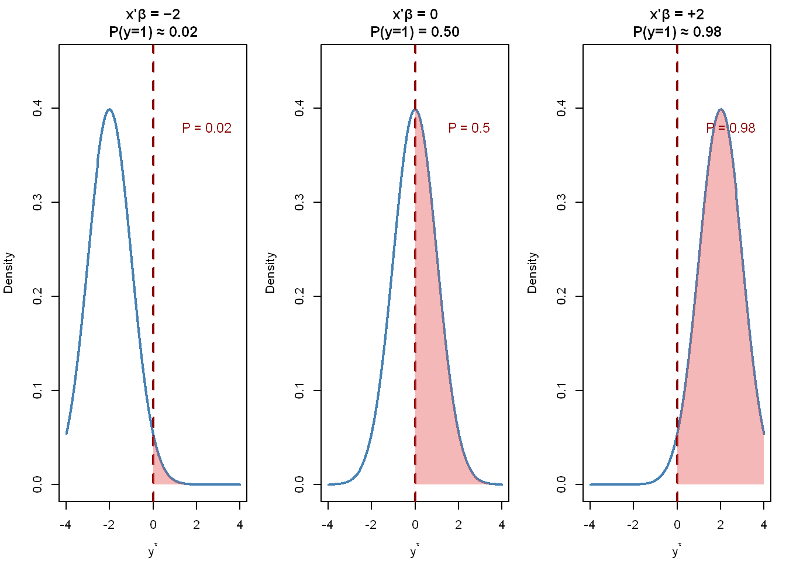
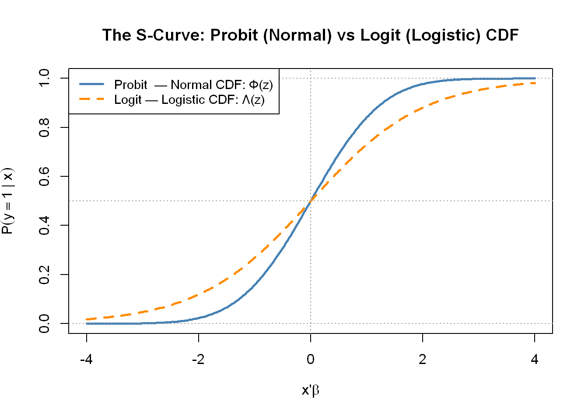
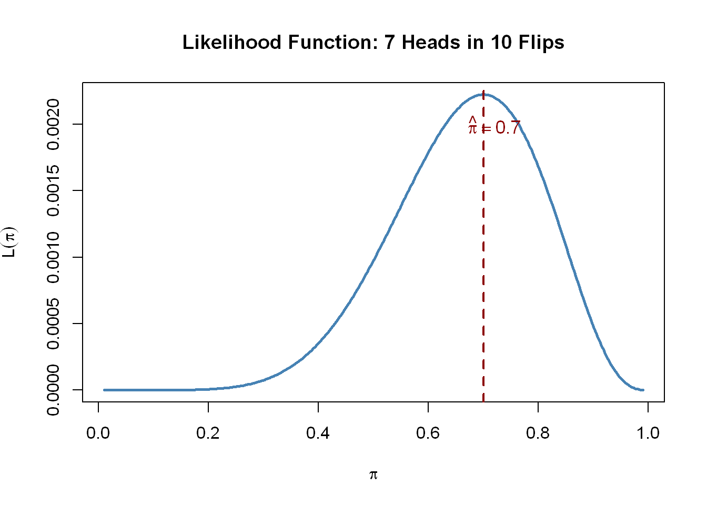

rm(list = ls())
options(
repr.plot.width = 8,
repr.plot.height = 6,
repr.plot.res = 150,
warn = -1
)
packages <- c(
"wooldridge", # Mroz dataset
"modelsummary", # Regression tables
"knitr", # Table formatting
"ggplot2" # Plotting
)
invisible(lapply(packages, function(pkg) {
if (!require(pkg, character.only = TRUE, quietly = TRUE)) {
install.packages(pkg)
require(pkg, character.only = TRUE, quietly = TRUE)
}
}))Binary Choice Models
Introduction
NYU - Applied Statistics and Econometrics 2
What This Notebook Covers
This notebook develops the theory and practice of binary choice models — the workhorse of applied econometrics whenever the outcome of interest is a yes/no decision. We build everything from scratch: starting with why OLS fails, deriving the S-shaped probability curve from first principles, constructing the likelihood function, and estimating probit and logit models on real data.
Along the way we cover:
- Why the linear probability model is a flawed but useful benchmark
- The latent variable representation and why it generates an S-curve
- Why the CDF appears in these models — derived, not assumed
- Maximum likelihood estimation from coin flips to binary choice
- Probit vs logit: the same model, two distributional assumptions
- Inference via the Hessian: z-tests, likelihood ratio tests, pseudo-R²
- A preview of marginal effects — the gap between \(\hat\beta\) and the probability impact
The thread: By the end of this notebook you should be able to trace a single chain:
\[\text{Latent utility} \xrightarrow{\text{threshold rule}} \text{Probability} \xrightarrow{\text{MLE}} \text{Estimation}\]
Every piece of what follows builds toward that chain.
1 Setup
1.1 Load Packages and Data
1.2 The Mroz Dataset
We use the Mroz (1987) dataset throughout this unit. It contains cross-sectional data on 753 married women, drawn from the Panel Study of Income Dynamics. The research question is simple: what determines whether a married woman participates in the labor force?
data("mroz", package = "wooldridge")
my.df <- data.frame(mroz)Key variables:
vars <- data.frame(
Variable = c("inlf", "nwifeinc", "educ", "exper", "expersq",
"age", "kidslt6", "kidsge6"),
Description = c(
"In labor force, 1975 (1 = yes, 0 = no) — our outcome",
"Non-wife family income (thousands of 1975 dollars)",
"Years of schooling",
"Years of labor market experience",
"Experience squared",
"Woman's age (years)",
"Number of children under age 6",
"Number of children aged 6–18"
)
)
kable(vars, caption = "Key Variables in the Mroz Dataset")| Variable | Description |
|---|---|
| inlf | In labor force, 1975 (1 = yes, 0 = no) — our outcome |
| nwifeinc | Non-wife family income (thousands of 1975 dollars) |
| educ | Years of schooling |
| exper | Years of labor market experience |
| expersq | Experience squared |
| age | Woman’s age (years) |
| kidslt6 | Number of children under age 6 |
| kidsge6 | Number of children aged 6–18 |
# Share of women in labor force
cat("Share in labor force:", round(mean(my.df$inlf), 3), "\n")Share in labor force: 0.568 cat("Sample size:", nrow(my.df), "\n")Sample size: 753 About 57% of women in the sample are in the labor force. This is a convenient range — predicted probabilities near 0.5 mean the LPM will be at its least misleading, which makes the comparison to probit and logit instructive throughout.
2 The Problem: Modeling a Binary Outcome
2.1 The Reframe That Changes Everything
The three examples from lecture — labor force participation, corporate default, consumer purchase — share a common mathematical structure. In each case we observe a binary outcome and a set of covariates, and we want to understand how the covariates affect the probability of the outcome.
The key insight is this:
\[\boxed{E[y_i \mid \mathbf{x}_i] = P(y_i = 1 \mid \mathbf{x}_i)}\]
This is not an assumption — it is a mathematical fact. If \(y_i\) is Bernoulli, then its conditional expectation equals its conditional probability of equaling one. But the implication is profound: we are not trying to model the level of \(y_i\) (which is always 0 or 1). We are trying to model the probability that \(y_i = 1\).
That shift — from levels to probabilities — is why the right-hand side of our model must be confined to the interval \([0, 1]\). Which immediately tells us that OLS has a problem. Let’s look at that problem carefully before we fix it.
3 Part I: The Linear Probability Model
3.1 What OLS Gives You
The most natural first move is OLS. Regress the binary outcome on covariates:
\[y_i = \mathbf{x}_i'\beta + \varepsilon_i\]
Since \(E[y_i|\mathbf{x}_i] = P(y_i = 1|\mathbf{x}_i)\), OLS is estimating:
\[P(y_i = 1 \mid \mathbf{x}_i) = \mathbf{x}_i'\beta\]
This is the Linear Probability Model (LPM). The name is exactly right — it models probability as a linear function of the covariates.
equation <- inlf ~ nwifeinc + educ + exper + expersq + age + kidslt6 + kidsge6
LPM <- lm(equation, data = my.df)
summary(LPM)
Call:
lm(formula = equation, data = my.df)
Residuals:
Min 1Q Median 3Q Max
-0.93432 -0.37526 0.08833 0.34404 0.99417
Coefficients:
Estimate Std. Error t value Pr(>|t|)
(Intercept) 0.5855192 0.1541780 3.798 0.000158 ***
nwifeinc -0.0034052 0.0014485 -2.351 0.018991 *
educ 0.0379953 0.0073760 5.151 3.32e-07 ***
exper 0.0394924 0.0056727 6.962 7.38e-12 ***
expersq -0.0005963 0.0001848 -3.227 0.001306 **
age -0.0160908 0.0024847 -6.476 1.71e-10 ***
kidslt6 -0.2618105 0.0335058 -7.814 1.89e-14 ***
kidsge6 0.0130122 0.0131960 0.986 0.324415
---
Signif. codes: 0 '***' 0.001 '**' 0.01 '*' 0.05 '.' 0.1 ' ' 1
Residual standard error: 0.4271 on 745 degrees of freedom
Multiple R-squared: 0.2642, Adjusted R-squared: 0.2573
F-statistic: 38.22 on 7 and 745 DF, p-value: < 2.2e-16The coefficients have a direct and appealing interpretation: \(\hat\beta_k\) is the change in the probability of \(y=1\) for a one-unit increase in \(x_k\), holding all other covariates fixed. No transformation required. A married woman with one more year of education has a 3.8 percentage point higher probability of labor force participation.
3.2 The Three Problems
Problem 1: Predicted probabilities outside \([0,1]\).
The regression line does not know about the \([0,1]\) constraint. At extreme values of the covariates, the linear combination \(\mathbf{x}_i'\hat\beta\) will exceed 1 or fall below 0. These are not probabilities.
lpm_preds <- predict(LPM)
cat("Predictions above 1:", sum(lpm_preds > 1), "\n")Predictions above 1: 17 cat("Predictions below 0:", sum(lpm_preds < 0), "\n")Predictions below 0: 16 cat("Range: [", round(min(lpm_preds), 3), ",", round(max(lpm_preds), 3), "]\n")Range: [ -0.345 , 1.127 ]# Visualize the out-of-bounds predictions
plot_df <- data.frame(fitted = lpm_preds, y = my.df$inlf)
ggplot(plot_df, aes(x = fitted, y = y)) +
geom_point(alpha = 0.3, color = "steelblue") +
geom_vline(xintercept = c(0, 1), linetype = "dashed", color = "red", linewidth = 0.8) +
geom_smooth(method = "lm", se = FALSE, color = "darkred", linewidth = 1) +
annotate("text", x = min(lpm_preds) + 0.01, y = 0.5,
label = "Predicted < 0", color = "red", hjust = 0, size = 3.5) +
annotate("text", x = max(lpm_preds) - 0.01, y = 0.5,
label = "Predicted > 1", color = "red", hjust = 1, size = 3.5) +
labs(
title = "LPM: Predicted Probabilities vs. Observed Outcome",
subtitle = "Red dashed lines mark the [0,1] boundary — the line ignores it",
x = "Fitted Values (Predicted Probability)",
y = "Labor Force Participation (0/1)"
) +
theme_minimal()
Roughly 4% of observations in this dataset receive an impossible predicted probability. In applications with rare events or extreme covariate values — credit default, fraud detection — the problem is far worse.
Problem 2: Heteroskedasticity by construction.
If \(P(y_i = 1 | \mathbf{x}_i) = \mathbf{x}_i'\beta \equiv \pi_i\), then because \(y_i\) is Bernoulli:
\[\text{Var}(\varepsilon_i | \mathbf{x}_i) = \pi_i(1 - \pi_i) = \mathbf{x}_i'\beta\,(1 - \mathbf{x}_i'\beta)\]
This is not a nuisance to be fixed with robust standard errors — it is structural. The variance of the error must depend on \(\mathbf{x}\), because \(y\) is binary. OLS standard errors are therefore always wrong for LPM unless you use robust variants.
Problem 3: Wrong functional form.
Look at the scatter plot above. The data has a distinct S-shape: probability rises steeply in the middle of the distribution and flattens near 0 and 1. OLS fits a line through this S-curve, which is the wrong functional form.
3.3 What the LPM Leaves Open
These are symptoms. The deeper problem is that OLS never asks: where does the S-shape come from? What is the underlying process generating binary outcomes? Why should the relationship between covariates and probability be S-shaped rather than some other shape?
Answering that question is what the next section does — and the answer turns out to explain everything: why we use a CDF, why we have probit vs. logit, and why MLE is the right estimator.
4 Part II: The Latent Variable — The Engine
4.1 Utility Maximization and the Decision Rule
Binary choice is most naturally understood as the outcome of a utility-maximizing decision. Individual \(i\) faces two alternatives. Define their utilities:
\[U_{i1} = \text{utility from choosing } y = 1, \qquad U_{i0} = \text{utility from choosing } y = 0\]
The individual chooses \(y = 1\) if and only if \(U_{i1} > U_{i0}\).
Each utility has an observable deterministic component and an unobservable random component:
\[U_{i1} = V_{i1} + \varepsilon_{i1}, \qquad U_{i0} = V_{i0} + \varepsilon_{i0}\]
where \(V_{ij}\) is what we can model — a function of covariates — and \(\varepsilon_{ij}\) is everything we cannot observe.
The key move: Since only the difference in utilities matters for the decision, define:
\[y_i^* \equiv U_{i1} - U_{i0} = (V_{i1} - V_{i0}) + (\varepsilon_{i1} - \varepsilon_{i0}) = \mathbf{x}_i'\beta + \varepsilon_i\]
This latent variable \(y_i^*\) is the individual’s net inclination toward \(y = 1\) — a single index that summarizes the whole decision. The observed outcome is then:
\[y_i = \mathbf{1}(y_i^* > 0)\]
The individual chooses \(y = 1\) precisely when their net utility is positive.
\(y_i^*\) is never observed. We observe only which side of zero it falls on. Every model in this unit lives on that fact.
4.2 Deriving the Probability — Where the CDF Comes From
Given the latent variable setup, we can derive \(P(y_i = 1 | \mathbf{x}_i)\) directly. No assumptions about functional form required — just four lines of algebra.
\[P(y_i = 1 \mid \mathbf{x}_i) = P(y_i^* > 0 \mid \mathbf{x}_i)\]
\[= P(\mathbf{x}_i'\beta + \varepsilon_i > 0 \mid \mathbf{x}_i)\]
\[= P(\varepsilon_i > -\mathbf{x}_i'\beta \mid \mathbf{x}_i)\]
\[= 1 - F_\varepsilon(-\mathbf{x}_i'\beta)\]
If the distribution of \(\varepsilon_i\) is symmetric around zero — as both the standard normal and the logistic distribution are — then \(1 - F(-z) = F(z)\), so:
\[\boxed{P(y_i = 1 \mid \mathbf{x}_i) = F(\mathbf{x}_i'\beta)}\]
where \(F(\cdot)\) is the CDF of \(\varepsilon_i\).
This is the core result. The S-curve is not a functional form we imposed on the data. It is the mathematical consequence of a threshold rule on a continuous latent variable. The distributional assumption on \(\varepsilon\) determines which CDF we get:
- \(\varepsilon \sim N(0,1)\) → \(F = \Phi\) → Probit
- \(\varepsilon \sim \text{Logistic}(0,1)\) → \(F = \Lambda\) → Logit
Probit and logit are not two arbitrary models. They are the same model — threshold rule on a latent variable — with two different distributional assumptions.
4.3 Graphical Intuition: Why the S-Shape Emerges
The picture makes the algebra concrete. Consider a single regressor and a latent variable \(y_i^* = \beta_0 + \beta_1 x_i + \varepsilon_i\).
For a given value of \(\mathbf{x}_i'\beta\), the latent variable has a distribution centered at \(\mathbf{x}_i'\beta\). The probability \(P(y = 1)\) is the area under the density of \(\varepsilon_i\) to the right of the threshold at zero.
# Illustrate how the shaded area (probability) changes as x'beta shifts
par(mfrow = c(1, 3), mar = c(4, 4, 3, 1))
z_seq <- seq(-4, 4, length.out = 300)
centers <- c(-2, 0, 2)
titles <- c("x'β = −2\nP(y=1) ≈ 0.02",
"x'β = 0\nP(y=1) = 0.50",
"x'β = +2\nP(y=1) ≈ 0.98")
for (k in seq_along(centers)) {
mu <- centers[k]
dens <- dnorm(z_seq, mean = mu, sd = 1)
plot(z_seq, dens, type = "l", lwd = 2, col = "steelblue",
xlab = expression(y^"*"), ylab = "Density",
main = titles[k], xlim = c(-4, 4), ylim = c(0, 0.45))
abline(v = 0, lwd = 2, col = "darkred", lty = 2)
# Shade area to right of 0
shade_x <- z_seq[z_seq >= 0]
shade_y <- dnorm(shade_x, mean = mu, sd = 1)
polygon(c(0, shade_x, max(shade_x)),
c(0, shade_y, 0),
col = rgb(0.9, 0.3, 0.3, 0.4), border = NA)
text(2.5, 0.38, paste0("P = ", round(pnorm(0, mean = mu, sd = 1, lower.tail = FALSE), 2)),
cex = 1.1, col = "darkred")
}
As \(\mathbf{x}_i'\beta\) moves from left to right — increasing from \(-\infty\) to \(+\infty\) — the shaded area traces out the S-curve of the CDF. The S-shape is the geometry of a shifting distribution crossing a fixed threshold.
Notice also that the shaded area changes fastest when we are near the center — when \(\mathbf{x}_i'\beta \approx 0\) and the density is at its maximum. A small shift near the center moves a large amount of probability mass. A small shift deep in the tails moves very little. This is why marginal effects are not constant in these models — something we will return to at the end of this notebook.
# Plot the two CDFs side by side
z <- seq(-4, 4, length.out = 300)
plot(z, pnorm(z), type = "l", lwd = 2.5, col = "steelblue",
xlab = expression(bold(x)*"'"*beta), ylab = expression(P(y==1~"|"~bold(x))),
main = "The S-Curve: Probit (Normal) vs Logit (Logistic) CDF",
ylim = c(0, 1))
lines(z, plogis(z), lwd = 2.5, col = "darkorange", lty = 2)
abline(h = c(0, 0.5, 1), lty = 3, col = "gray60")
abline(v = 0, lty = 3, col = "gray60")
legend("topleft",
legend = c("Probit — Normal CDF: Φ(z)",
"Logit — Logistic CDF: Λ(z)"),
col = c("steelblue", "darkorange"),
lty = c(1, 2), lwd = 2.5, cex = 0.9)
The two curves are nearly identical throughout most of the distribution. They diverge only in the tails, where the logistic distribution is heavier — it assigns more probability to extreme events than the normal does.
4.4 The Identification Normalization
One technical issue deserves attention before we estimate. If \(y^* = \mathbf{x}'\beta + \varepsilon\), we could multiply both sides by any positive constant \(c\):
\[c \cdot y^* = \mathbf{x}'(c\beta) + c\varepsilon\]
The threshold rule \(y = \mathbf{1}(y^* > 0)\) is invariant to this rescaling — it produces exactly the same observed choices regardless of \(c\). This means we cannot separately identify \(\beta\) and the scale of \(\varepsilon\). Only the ratio \(\beta / \text{Std}(\varepsilon)\) is identified by the data.
The solution is to normalize the scale by assumption:
normalization_table <- data.frame(
Model = c("Probit", "Logit"),
Normalization = c("ε ~ N(0, 1)", "ε ~ Logistic(0, π²/3)"),
Consequence = c(
"Coefficients in units of SD of ε — probit estimates β/σ with σ = 1",
"Coefficients in log-odds units — logit estimates β/σ with σ = π/√3 ≈ 1.81"
)
)
kable(normalization_table, caption = "Scale Normalizations and Their Consequences")| Model | Normalization | Consequence |
|---|---|---|
| Probit | ε ~ N(0, 1) | Coefficients in units of SD of ε — probit estimates β/σ with σ = 1 |
| Logit | ε ~ Logistic(0, π²/3) | Coefficients in log-odds units — logit estimates β/σ with σ = π/√3 ≈ 1.81 |
This is why the raw \(\hat\beta\) coefficients from probit and logit are not directly interpretable as probability changes — and why they are not comparable to each other. They are index coefficients: they encode the direction and relative magnitude of effects in different units. To convert to probability units, we need marginal effects (covered at the end of this notebook and in detail in Lecture 2).
5 Part III: Maximum Likelihood Estimation
5.1 Why Not OLS?
We have derived the correct probability model: \(P(y_i = 1 | \mathbf{x}_i) = F(\mathbf{x}_i'\beta)\). Now we need to estimate \(\beta\). OLS is the natural instinct, but it is the wrong tool — not merely because it gives out-of-bounds predictions, but because it optimizes the wrong objective.
OLS minimizes \(\sum_i (y_i - \mathbf{x}_i'\beta)^2\). This is appropriate when errors are continuous and approximately normally distributed. For binary \(y_i\), the residual can take only two values for each observation: \(1 - \hat p_i\) (if \(y_i = 1\)) or \(0 - \hat p_i\) (if \(y_i = 0\)). Squared errors on a two-point distribution have nothing to do with the probabilistic structure we just derived.
The right question is: given the data we actually observed, which \(\beta\) made that data most likely? This is the maximum likelihood principle.
5.2 Building Intuition: The Biased Coin
Before jumping to binary choice, consider a simpler problem. You flip a coin \(n\) times and observe \(k\) heads. The coin may be biased — its true probability of heads is \(\pi\) (unknown). What is your best estimate of \(\pi\)?
Each flip is Bernoulli: \(P(X_i = x) = \pi^x(1-\pi)^{1-x}\). Assuming independence, the joint probability of the entire sequence is:
\[\mathcal{L}(\pi) = \pi^k(1-\pi)^{n-k}\]
This is a function of \(\pi\), not of the data. For fixed \((k, n)\), it tells us how likely the observed data was, for each possible value of \(\pi\).
The log-likelihood is easier to maximize:
\[\ell(\pi) = k\log\pi + (n-k)\log(1-\pi)\]
Taking the first order condition:
\[\frac{\partial\ell}{\partial\pi} = \frac{k}{\pi} - \frac{n-k}{1-\pi} = 0 \implies \hat\pi = \frac{k}{n}\]
The MLE of \(\pi\) is the sample proportion — confirming our intuition that if 7 of 10 flips are heads, our best estimate is \(\hat\pi = 0.7\).
# Visualize the likelihood function for 7 heads in 10 flips
pi_seq <- seq(0.01, 0.99, length.out = 300)
lik <- pi_seq^7 * (1 - pi_seq)^3
plot(pi_seq, lik, type = "l", lwd = 2.5, col = "steelblue",
xlab = expression(pi), ylab = expression(L(pi)),
main = "Likelihood Function: 7 Heads in 10 Flips")
abline(v = 0.7, lty = 2, col = "darkred", lwd = 2)
text(0.72, max(lik) * 0.9, expression(hat(pi) == 0.7),
col = "darkred", cex = 1.1)
The likelihood peaks at the sample proportion. The MLE is the parameter value that makes the observed data most probable — working backwards from data to parameters.
5.3 From Coin Flip to Binary Choice
Binary choice is the coin flip generalized: instead of a single unknown probability \(\pi\), each observation has its own person-specific probability \(p_i(\beta) = F(\mathbf{x}_i'\beta)\).
The likelihood contribution of observation \(i\) is:
\[\mathcal{L}_i(\beta) = p_i(\beta)^{y_i} \cdot [1 - p_i(\beta)]^{1-y_i}\]
When \(y_i = 1\) this equals \(p_i\) — we want that probability to be high. When \(y_i = 0\) it equals \(1 - p_i\) — we want that to be high instead.
Assuming independence, the full likelihood is:
\[\mathcal{L}(\beta) = \prod_{i=1}^N p_i(\beta)^{y_i} \cdot [1 - p_i(\beta)]^{1-y_i}\]
Equivalently, splitting by observed outcome:
\[\mathcal{L}(\beta) = \prod_{i:\,y_i=1} F(\mathbf{x}_i'\beta) \;\cdot\; \prod_{i:\,y_i=0} [1 - F(\mathbf{x}_i'\beta)]\]
The log-likelihood (easier to work with numerically) is:
\[\ell(\beta) = \sum_{i=1}^N \left[ y_i \log F(\mathbf{x}_i'\beta) + (1-y_i)\log(1 - F(\mathbf{x}_i'\beta)) \right]\]
We choose \(\hat\beta\) to maximize \(\ell(\beta)\). There is no closed-form solution — maximization is done numerically.
translation_table <- data.frame(
` ` = c("Unknown parameter(s)", "Probability per trial",
"Closed-form solution?", "Logic"),
`Coin flip` = c("π (scalar)", "π (same for all flips)",
"Yes — sample proportion",
"Choose π to maximize P(observed heads)"),
`Binary choice` = c("β (vector)", "F(x'β) (person-specific)",
"No — numerical optimization",
"Choose β to maximize P(observed y sequence)")
)
kable(translation_table,
col.names = c("", "Coin Flip", "Binary Choice"),
caption = "From Coin Flip to Binary Choice: The Same Logic")| Coin Flip | Binary Choice | |
|---|---|---|
| Unknown parameter(s) | π (scalar) | β (vector) |
| Probability per trial | π (same for all flips) | F(x’β) (person-specific) |
| Closed-form solution? | Yes — sample proportion | No — numerical optimization |
| Logic | Choose π to maximize P(observed heads) | Choose β to maximize P(observed y sequence) |
The logic is identical. The coin flip is just the special case where everyone has the same probability.
6 Part IV: Probit and Logit
6.1 Probit — The Normal CDF
If we assume \(\varepsilon_i \sim N(0,1)\), the CDF is the standard normal, and the model becomes:
\[P(y_i = 1 \mid \mathbf{x}_i) = \Phi(\mathbf{x}_i'\beta) = \frac{1}{\sqrt{2\pi}} \int_{-\infty}^{\mathbf{x}_i'\beta} \exp\!\left(-\frac{t^2}{2}\right)dt\]
probit_glm <- glm(equation, data = my.df, family = binomial(link = "probit"))
summary(probit_glm)
Call:
glm(formula = equation, family = binomial(link = "probit"), data = my.df)
Coefficients:
Estimate Std. Error z value Pr(>|z|)
(Intercept) 0.2700736 0.5080782 0.532 0.59503
nwifeinc -0.0120236 0.0049392 -2.434 0.01492 *
educ 0.1309040 0.0253987 5.154 2.55e-07 ***
exper 0.1233472 0.0187587 6.575 4.85e-11 ***
expersq -0.0018871 0.0005999 -3.145 0.00166 **
age -0.0528524 0.0084624 -6.246 4.22e-10 ***
kidslt6 -0.8683247 0.1183773 -7.335 2.21e-13 ***
kidsge6 0.0360056 0.0440303 0.818 0.41350
---
Signif. codes: 0 '***' 0.001 '**' 0.01 '*' 0.05 '.' 0.1 ' ' 1
(Dispersion parameter for binomial family taken to be 1)
Null deviance: 1029.7 on 752 degrees of freedom
Residual deviance: 802.6 on 745 degrees of freedom
AIC: 818.6
Number of Fisher Scoring iterations: 4The coefficients tell us the direction and significance of each variable’s effect on the latent index. A one-year increase in education shifts \(y^*\) by 0.131 standard deviations of \(\varepsilon\). The sign is positive — more education increases the latent propensity to work. But 0.131 is not a probability change. It is an index shift in units of the normalized error term.
The log-likelihood for the fitted model:
cat("Log-likelihood (probit):", round(logLik(probit_glm)[1], 4), "\n")Log-likelihood (probit): -401.3022 cat("AIC:", round(AIC(probit_glm), 2), "\n")AIC: 818.6 6.2 Logit — The Logistic CDF
If we instead assume \(\varepsilon_i \sim \text{Logistic}(0, \pi^2/3)\), the CDF is the logistic function:
\[P(y_i = 1 \mid \mathbf{x}_i) = \Lambda(\mathbf{x}_i'\beta) = \frac{e^{\mathbf{x}_i'\beta}}{1 + e^{\mathbf{x}_i'\beta}} = \frac{1}{1 + e^{-\mathbf{x}_i'\beta}}\]
An alternative derivation arrives at the same expression by assuming the log-odds is linear:
\[\log\frac{P(y=1)}{P(y=0)} = \mathbf{x}_i'\beta\]
Solving for \(P(y=1)\) gives \(\Lambda(\mathbf{x}_i'\beta)\). This is why logit coefficients are interpreted as log-odds: a one-unit increase in \(x_k\) increases the log-odds of \(y=1\) by \(\hat\beta_k\), or equivalently multiplies the odds by \(e^{\hat\beta_k}\).
logit_glm <- glm(equation, data = my.df, family = binomial(link = "logit"))
summary(logit_glm)
Call:
glm(formula = equation, family = binomial(link = "logit"), data = my.df)
Coefficients:
Estimate Std. Error z value Pr(>|z|)
(Intercept) 0.425452 0.860365 0.495 0.62095
nwifeinc -0.021345 0.008421 -2.535 0.01126 *
educ 0.221170 0.043439 5.091 3.55e-07 ***
exper 0.205870 0.032057 6.422 1.34e-10 ***
expersq -0.003154 0.001016 -3.104 0.00191 **
age -0.088024 0.014573 -6.040 1.54e-09 ***
kidslt6 -1.443354 0.203583 -7.090 1.34e-12 ***
kidsge6 0.060112 0.074789 0.804 0.42154
---
Signif. codes: 0 '***' 0.001 '**' 0.01 '*' 0.05 '.' 0.1 ' ' 1
(Dispersion parameter for binomial family taken to be 1)
Null deviance: 1029.75 on 752 degrees of freedom
Residual deviance: 803.53 on 745 degrees of freedom
AIC: 819.53
Number of Fisher Scoring iterations: 46.3 Comparing the Three Models
models <- list(LPM = LPM, Probit = probit_glm, Logit = logit_glm)
modelsummary(
models,
title = "Labor Force Participation Models",
fmt = "%.4f",
stars = TRUE,
gof_omit = ".*"
)| LPM | Probit | Logit | |
|---|---|---|---|
| + p < 0.1, * p < 0.05, ** p < 0.01, *** p < 0.001 | |||
| (Intercept) | 0.5855*** | 0.2701 | 0.4255 |
| (0.1542) | (0.5081) | (0.8604) | |
| nwifeinc | -0.0034* | -0.0120* | -0.0213* |
| (0.0014) | (0.0049) | (0.0084) | |
| educ | 0.0380*** | 0.1309*** | 0.2212*** |
| (0.0074) | (0.0254) | (0.0434) | |
| exper | 0.0395*** | 0.1233*** | 0.2059*** |
| (0.0057) | (0.0188) | (0.0321) | |
| expersq | -0.0006** | -0.0019** | -0.0032** |
| (0.0002) | (0.0006) | (0.0010) | |
| age | -0.0161*** | -0.0529*** | -0.0880*** |
| (0.0025) | (0.0085) | (0.0146) | |
| kidslt6 | -0.2618*** | -0.8683*** | -1.4434*** |
| (0.0335) | (0.1184) | (0.2036) | |
| kidsge6 | 0.0130 | 0.0360 | 0.0601 |
| (0.0132) | (0.0440) | (0.0748) | |
The three models agree on signs and significance across every variable. Education, experience, and the presence of young children are the dominant determinants of labor force participation — positive for the first two, strongly negative for the third.
The magnitudes look wildly different: the logit coefficient on kidslt6 is \(-1.44\), against \(-0.87\) for probit and \(-0.26\) for LPM. This is an artifact of scale normalization, not a substantive disagreement. Each model encodes effects in different units:
scale_table <- data.frame(
Model = c("LPM", "Probit", "Logit"),
`Units of β_k` = c(
"Percentage point change in P(y=1) — directly interpretable",
"Change in latent index in units of SD(ε), with SD normalized to 1",
"Change in log-odds of y=1; multiply by exp() for odds ratio"
),
`kidslt6 coefficient` = c("-0.2618", "-0.8683", "-1.4434")
)
kable(scale_table, caption = "Scale Differences Across Models")| Model | Units.of.β_k | kidslt6.coefficient |
|---|---|---|
| LPM | Percentage point change in P(y=1) — directly interpretable | -0.2618 |
| Probit | Change in latent index in units of SD(ε), with SD normalized to 1 | -0.8683 |
| Logit | Change in log-odds of y=1; multiply by exp() for odds ratio | -1.4434 |
To compare the models on equal footing, we need to convert all coefficients to the same currency — probability units. That is the job of marginal effects.
7 Part VI: Marginal Effects — A Preview
7.1 Why \(\hat\beta\) Is Not the Answer
We established that raw probit and logit coefficients are not probability changes — they are index coefficients on a normalized scale. To answer the question “by how much does a one-unit increase in \(x_k\) change the probability of \(y = 1\)?”, we need to differentiate the probability with respect to \(x_k\).
For probit:
\[\frac{\partial P(y=1 \mid \mathbf{x})}{\partial x_k} = \phi(\mathbf{x}'\hat\beta) \cdot \hat\beta_k\]
where \(\phi(\cdot)\) is the standard normal PDF.
For logit:
\[\frac{\partial P(y=1 \mid \mathbf{x})}{\partial x_k} = \Lambda(\mathbf{x}'\hat\beta)\,[1 - \Lambda(\mathbf{x}'\hat\beta)] \cdot \hat\beta_k\]
Both expressions depend on \(\mathbf{x}\). This is the key problem: the marginal effect of education on labor force participation depends on who you are asking about. A woman already near certainty of participation has a tiny marginal effect from one more year of education. A woman near 50% has a much larger one — the density is highest at the center.
7.2 PEA and APE
Since the marginal effect varies across observations, we need a summary statistic. There are two standard choices.
Partial Effect at the Average (PEA): Evaluate the expression at the sample means of all covariates.
\[\text{PEA}_k = \phi(\bar{\mathbf{x}}'\hat\beta) \cdot \hat\beta_k\]
Average Partial Effect (APE): Compute the marginal effect for every observation, then average.
\[\text{APE}_k = \frac{1}{N}\sum_{i=1}^N \phi(\mathbf{x}_i'\hat\beta) \cdot \hat\beta_k\]
The APE averages over the actual distribution of characteristics in the sample. The PEA evaluates at a single representative point. The AME is generally preferred in applied work because it respects the heterogeneity in the sample — and because the “average person” defined by the sample means may not be a realistic individual (especially when dummies or nonlinear terms are involved).
As a preview, consider the probit coefficient on kidslt6: \(\hat\beta = -0.868\). This is not the probability impact. The APE — computed at Lecture 2 — will be approximately \(-0.32\): having one more child under age 6 reduces the probability of labor force participation by about 32 percentage points. This is much closer to the LPM estimate of \(-0.26\), which illustrates the general rule that LPM and the nonlinear models tend to agree in the middle of the distribution.
Lecture 2 opens with a full treatment of marginal effects: deriving the APE formally, showing how PEA and APE differ numerically, and walking through the R implementation in detail.
8 Summary and Key Takeaways
8.1 The Chain We Built
\[\underbrace{y_i^* = \mathbf{x}_i'\beta + \varepsilon_i}_{\text{Latent utility}} \xrightarrow{\;y_i = \mathbf{1}(y_i^*>0)\;} \underbrace{P(y_i=1|\mathbf{x}_i) = F(\mathbf{x}_i'\beta)}_{\text{Probability}} \xrightarrow{\;\max_\beta\;\ell(\beta)\;} \underbrace{\hat\beta}_{\text{MLE}}\]
Step by step:
- Latent utility: Individual \(i\) has net utility \(y_i^* = \mathbf{x}_i'\beta + \varepsilon_i\) — unobserved.
- Threshold rule: We observe \(y_i = 1\) iff \(y_i^* > 0\).
- Probability: \(P(y_i = 1|\mathbf{x}_i) = F(\mathbf{x}_i'\beta)\) — the CDF is derived, not assumed.
- MLE: Choose \(\hat\beta\) to maximize the Bernoulli log-likelihood across all observations.
- Probit vs logit: \(F = \Phi\) (normal) or \(F = \Lambda\) (logistic). Same structure, different tails.
- Marginal effects: \(\hat\beta_k\) is not the probability impact. \(\text{APE}_k = \frac{1}{N}\sum_i f(\mathbf{x}_i'\hat\beta)\hat\beta_k\) is. (Lecture 2)
8.2 What We Learned About Each Model
summary_table <- data.frame(
` ` = c("Functional form", "Coefficients directly interpretable?",
"Heteroskedastic errors?", "Predictions in [0,1]?",
"Estimation", "Best when"),
LPM = c("Linear", "Yes — probability units",
"Always (use robust SEs)", "No",
"OLS",
"Probabilities stay away from 0 and 1; quick benchmark"),
Probit = c("Φ(x'β) — normal CDF", "No — index units (z-score)",
"No structural heteroskedasticity", "Always",
"MLE (Newton-Raphson)",
"Traditional in economics; normal distribution assumption"),
Logit = c("Λ(x'β) — logistic CDF", "No — index units (log-odds)",
"No structural heteroskedasticity", "Always",
"MLE (Newton-Raphson)",
"Closed-form CDF; dominant in machine learning")
)
kable(summary_table,
col.names = c("", "LPM", "Probit", "Logit"),
caption = "Model Comparison Summary")| LPM | Probit | Logit | |
|---|---|---|---|
| Functional form | Linear | Φ(x’β) — normal CDF | Λ(x’β) — logistic CDF |
| Coefficients directly interpretable? | Yes — probability units | No — index units (z-score) | No — index units (log-odds) |
| Heteroskedastic errors? | Always (use robust SEs) | No structural heteroskedasticity | No structural heteroskedasticity |
| Predictions in [0,1]? | No | Always | Always |
| Estimation | OLS | MLE (Newton-Raphson) | MLE (Newton-Raphson) |
| Best when | Probabilities stay away from 0 and 1; quick benchmark | Traditional in economics; normal distribution assumption | Closed-form CDF; dominant in machine learning |
8.3 Practical Recommendations
Always:
- Run the LPM as a benchmark — it gives you a quick sanity check on signs and magnitudes
- Check for out-of-bounds LPM predictions before deciding how seriously to treat it
- Use robust standard errors with LPM
Never:
- Interpret probit or logit coefficients as probability changes
- Compare probit and logit coefficients directly — they’re on different scales
- Use LPM when predicted probabilities cluster near 0 or 1 (rare events, near-universal outcomes)
9 Further Reading
Textbooks:
- Greene, W. H. (2018). Econometric Analysis (8th ed.). Pearson. Chapter 17.
- Stock, J. H., & Watson, M. W. (2020). Introduction to Econometrics (4th ed.). Pearson. Chapter 11.
Applied Treatments:
- Angrist, J. D., & Pischke, J.-S. (2009). Mostly Harmless Econometrics. Princeton University Press. Chapter 3.4.
Original Dataset:
- Mroz, T. (1987). “The Sensitivity of an Empirical Model of Married Women’s Hours of Work to Economic and Statistical Assumptions.” Econometrica, 55(4), 765–799.